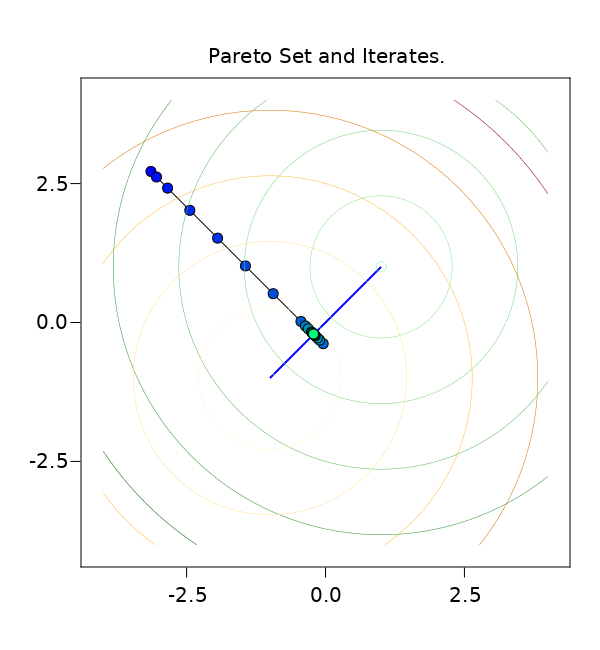
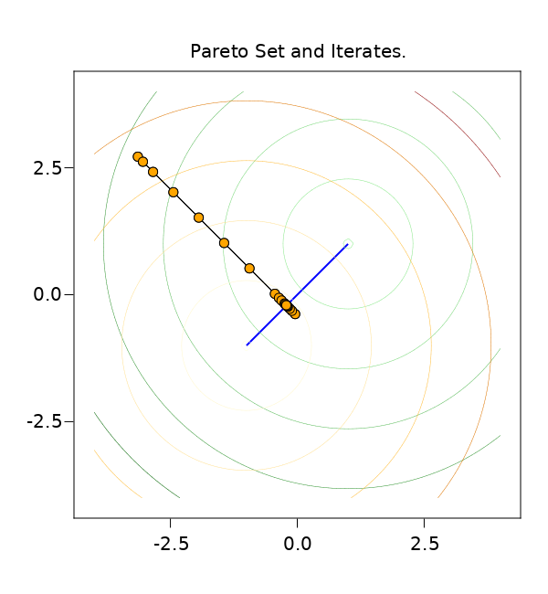
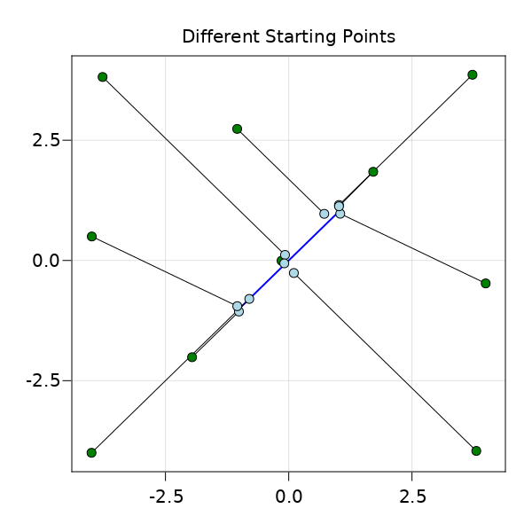

Two Parabolas
The “two parabolas” problem in two dimensions reads as
\[ \min_{𝐱 ∈ X } \begin{bmatrix} f₁(\mathbf{x}) \\ f₂(\mathbf{x}) \end{bmatrix} = \min_{\mathbf{x} ∈ X} \begin{bmatrix} (x₁ - 1)² + (x₂ - 1)² \\ (x₁ + 1)² + (x₂ + 1)² \end{bmatrix}.\]
It is unconstrained if the feasible set is $X = ℝ^2$. The individual minima $[1,1]$ and $[-1,-1]$ are such that (in the unconstrained case) the global Pareto Set is
\[\mathcal{P}_{S} = \{ \mathbf{x} ∈ ℝ^2 : x₁ = x₂, \, -1 \le x₁, x₂ \le 1 \}.\]
Solve using Exact Functions
The gradients are easily calculated as
\[\nabla f_1 (\mathbf x) = 2 \begin{bmatrix} x_1 -1 \\ x_2 - 1 \end{bmatrix}, \; \nabla f_2 (\mathbf x) = 2 \begin{bmatrix} x_1 +1 \\ x_2 + 1 \end{bmatrix}, \;\]
We can provide them to the solver to find a critical point:
using Morbit
f₁ = x -> sum( (x .- 1).^2 )
f₂ = x -> sum( (x .+ 1).^2 )
∇f₁ = x -> 2 .* ( x .- 1 )
∇f₂ = x -> 2 .* ( x .+ 1 )
mop = MixedMOP(2); # problem with 2 variables
add_objective!(mop, f₁, ∇f₁ )
add_objective!(mop, f₂, ∇f₂ )
# starting point
x₀ = [ -π ; 2.71828 ]
ac = AlgoConfig(max_iter = 20)
x, fx, id = optimize( mop, x₀; algo_config = ac )
x2-element Vector{Float64}:
-0.2072376482827694
-0.21607500532832352Hopefully, x is critical.
Plotting Iteration Sites
We can retrieve iteration data from id and the database Morbit.db(id).
db = Morbit.db(id);
# let's retrieve the iteration sites for plotting:
# (conversion to Tuples for easy plotting)
it_sites = Tuple.(Morbit.get_iterate_sites(db))Let's plot the Pareto Set and the iteration sites:
using AbstractPlotting, CairoMakie
# Pareto Set ≙ line from (-1,-1) to (1,1)
fig, ax, _ = lines( [(-1,-1),(1,1)]; color = :blue, linewidth = 2,
figure = (resolution=(600, 650),),
axis = (aspect = 1, title = "Pareto Set and Iterates.") )
# Plot the iteration sites:
lines!(it_sites)
scatter!(it_sites;
color = LinRange(0, 1, length(it_sites)),
colormap = :winter
)
# Plot function contours
Y = X = LinRange(-4, 4, 100)
Z₁ = [ f₁([x;y]) for x ∈ X, y ∈ X ]
Z₂ = [ f₂([x;y]) for x ∈ X, y ∈ X ]
levels = [ i.^2 for i = LinRange(.1, 6, 6) ]
contour!(X,Y,Z₁; colormap = :greens, levels = levels, linewidth = .5 )
contour!(X,Y,Z₂; colormap = :heat, levels = levels, linewidth = .5 )
Solving using RBF Surrogates
Suppose now that we do not have access to the objective gradients and that the objectives also take some time to evaluate. In this situation, we could try to model them using surrogate models. To use radial basis function models, pass an RbfConfig when specifying the objective:
mop_rbf = MixedMOP()
# define the RBF surrogates
rbf_cfg = RbfConfig(
kernel = :multiquadric,
shape_parameter = "20/Δ"
)
# add objective functions to `mop_rbf`
add_objective!(mop_rbf, f₁, rbf_cfg )
add_objective!(mop_rbf, f₂, rbf_cfg )
# only perform 10 iterations
x, fx, id = optimize( mop, x₀; algo_config = ac )
x2-element Vector{Float64}:
-0.2072376482827694
-0.21607500532832352The iteration site are the orange circles: 
Different Starting Points and Recycling Data
The method could converge to different points depending on the starting point. We can pass the evaluation data from previous runs to facilitate the construction of surrogate models:
# Suppose, `X` is a list of different points in ℝ²
# dict to hold starting and end points
start_fin_points = Dict();
# perform several runs:
db₀ = nothing
for x₀ ∈ X
global db₀
x_fin, fx_fin, id = optimize( mop_rbf, x₀; algo_config = ac, populated_db = db₀ )
start_fin_points[x₀] = x_fin
db₀ = Morbit.merge( db₀, Morbit.db(id) )
end
# Plot
for (k,v) in start_fin_points
lines!( [ Tuple(k), Tuple(v) ] )
end
scatter!( Tuple.(keys(start_fin_points));
color = :green
)
scatter!( Tuple.(values(start_fin_points));
color = :lightblue
)
save("two_parabolas_different_starting_points.png", fig) # hideIn the plot, the green points show the starting points and the lightblue circles show the final iterates: 